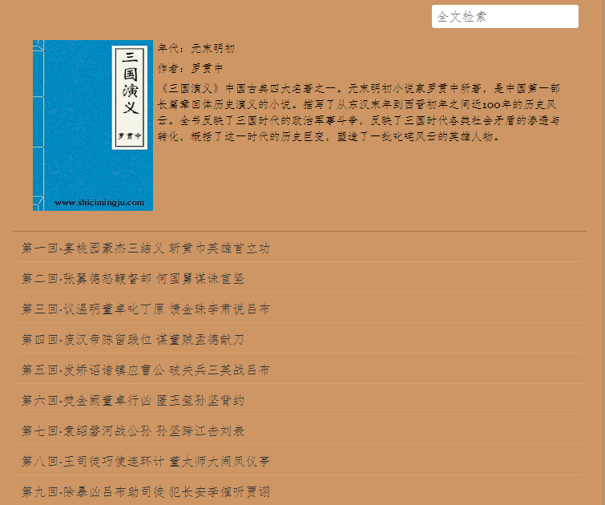
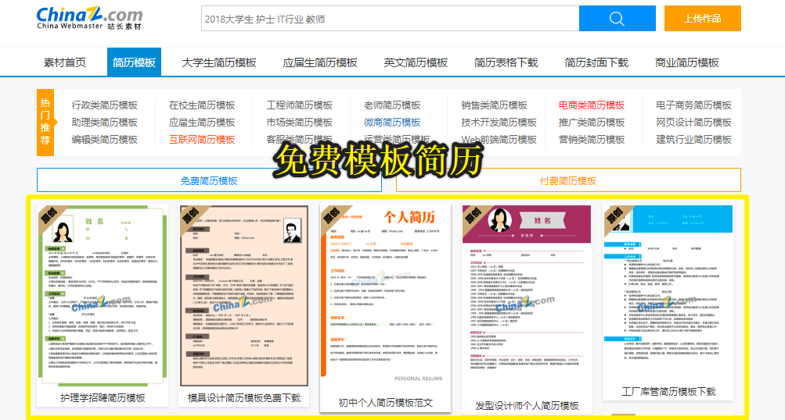
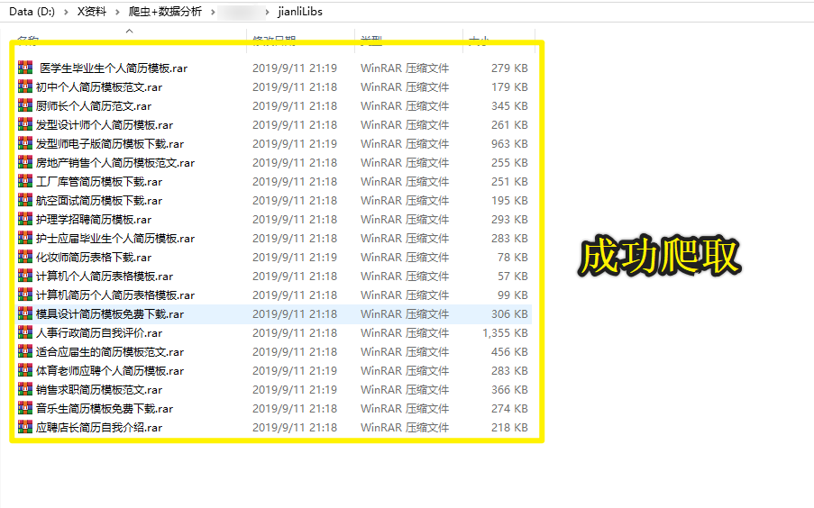

- 数据解析的作用：
- 可以帮助我们实现聚焦爬虫
- 数据解析的实现方式：
- 正则
- bs4
- xpath
- pyquery
- 数据解析的通用原理
- 问题1:聚焦爬虫爬取的数据是存储在哪里的？
- 都被存储在了相关的标签之中and相关标签的属性中
- 1.定位标签
- 2.取文本或者取属性import re
import os
#糗图爬取1-3页所有的图片
#1.使用通用爬虫将前3页对应的页面源码数据进行爬取
dirName = './imgLibs'
if not os.path.exists(dirName):
os.mkdir(dirName)
url = 'https://www.qiushibaike.com/pic/page/%d/' #通用的url模板(不可变)
for page in range(1,4):
new_url = format(url%page)
page_text = requests.get(new_url,headers=headers).text #每一个页码对应的页面源码数据
#2.在通用爬虫的基础上实现聚焦爬虫（每一个页码对应页面源码数据中解析出图片地址）
ex = '<div class="thumb">.*?<img src="(.*?)" alt.*?</div>'
img_src_list = re.findall(ex,page_text,re.S)
for src in img_src_list:
src = 'https:'+src
img_name = src.split('/')[-1]
img_path = dirName+'/'+img_name #./imgLibs/xxxx.jpg
request.urlretrieve(src,filename=img_path)
print(img_name,'下载成功！！！')
#爬取结果
UPMRMT2HSG0LUIVQ.jpg 下载成功！！！
TGFT803E704HH01J.jpg 下载成功！！！
IZ3H2HQN8W52V135.jpg 下载成功！！！
ENS2KXM8AR8DND3M.jpg 下载成功！！！
E9SNBPI3IAXIBUO2.jpg 下载成功！！！
HKVCEJ5EJ4O0MZP4.jpg 下载成功！！！
6I3IBR0L8NJENJ1Y.jpg 下载成功！！！
WJBH6EVCT780SV8N.jpg 下载成功！！！
X7X5LU4ZRJ5OT4TQ.jpg 下载成功！！！
NCKFQZDGEMGX160N.jpg 下载成功！！！
......- bs4解析的原理：
- 实例化一个BeautifulSoup的对象，需要将即将被解析的页面源码数据加载到该对象中
- 调用BeautifulSoup对象中的相关方法和属性进行标签定位和数据提取
- 环境的安装：
- pip install bs4
- pip install lxml
- BeautifulSoup的实例化：
- BeautifulSoup(fp,'lxml'):将本地存储的一个html文档中的数据加载到实例化好的BeautifulSoup对象中
- BeautifulSoup(page_text,'lxml'):将从互联网上获取的页面源码数据加载到实例化好的BeautifulSoup对象中
- 定位标签的操作：
- soup.tagName：定位到第一个出现的tagName标签
- 属性定位：soup.find('tagName',attrName='value')
- 属性定位:soup.find_all('tagName',attrName='value'),返回值为列表
- 选择器定位：soup.select('选择器')
- 层级选择器：>表示一个层级 空格表示多个层级
- 取文本
- .string:获取直系的文本内容
- .text:获取所有的文本内容
- 取属性
- tagName['attrName']<html lang="en">
<head>
<meta charset="UTF-8" />
<title>测试bs4</title>
</head>
<body>
<div>
<p>百里守约</p>
</div>
<div class="song">
<p>李清照</p>
<p>王安石</p>
<p>苏轼</p>
<p>柳宗元</p>
<a href="http://www.song.com/" title="赵匡胤" target="_self">
<span>this is span</span>
宋朝是最强大的王朝，不是军队的强大，而是经济很强大，国民都很有钱</a>
<a href="" class="du">总为浮云能蔽日,长安不见使人愁</a>
<img src="http://www.baidu.com/meinv.jpg" alt="" />
</div>
<div class="tang">
<ul>
<li><a href="http://www.baidu.com" title="qing">清明时节雨纷纷,路上行人欲断魂,借问酒家何处有,牧童遥指杏花村</a></li>
<li><a href="http://www.163.com" title="qin">秦时明月汉时关,万里长征人未还,但使龙城飞将在,不教胡马度阴山</a></li>
<li><a href="http://www.126.com" alt="qi">岐王宅里寻常见,崔九堂前几度闻,正是江南好风景,落花时节又逢君</a></li>
<li><a href="http://www.sina.com" class="du">杜甫</a></li>
<li><a href="http://www.dudu.com" class="du">杜牧</a></li>
<li><b>杜小月</b></li>
<li><i>度蜜月</i></li>
<li><a href="http://www.haha.com" id="feng">凤凰台上凤凰游,凤去台空江自流,吴宫花草埋幽径,晋代衣冠成古丘</a></li>
</ul>
</div>
</body>
</html>from bs4 import BeautifulSoup
fp = open('./test.html','r',encoding='utf-8')
soup = BeautifulSoup(fp,'lxml')
print(soup.div)
#执行结果
<div>
<p>百里守约</p>
</div>
from bs4 import BeautifulSoup
fp = open('./test.html','r',encoding='utf-8')
soup = BeautifulSoup(fp,'lxml')
print(soup.find('div',class_='song'))
#执行结果
<div class="song">
<p>李清照</p>
<p>王安石</p>
<p>苏轼</p>
<p>柳宗元</p>
<a href="http://www.song.com/" target="_self" title="赵匡胤">
<span>this is span</span>
宋朝是最强大的王朝，不是军队的强大，而是经济很强大，国民都很有钱</a>
<a class="du" href="">总为浮云能蔽日,长安不见使人愁</a>
<img alt="" src="http://www.baidu.com/meinv.jpg"/>
</div>
from bs4 import BeautifulSoup
fp = open('./test.html','r',encoding='utf-8')
soup = BeautifulSoup(fp,'lxml')
print(soup.find('a',id="feng"))
#执行结果
<a href="http://www.haha.com" id="feng">凤凰台上凤凰游,凤去台空江自流,吴宫花草埋幽径,晋代衣冠成古丘</a>
from bs4 import BeautifulSoup
fp = open('./test.html','r',encoding='utf-8')
soup = BeautifulSoup(fp,'lxml')
print(soup.find_all('div',class_="song"))
#执行结果
[<div class="song">
<p>李清照</p>
<p>王安石</p>
<p>苏轼</p>
<p>柳宗元</p>
<a href="http://www.song.com/" target="_self" title="赵匡胤">
<span>this is span</span>
宋朝是最强大的王朝，不是军队的强大，而是经济很强大，国民都很有钱</a>
<a class="du" href="">总为浮云能蔽日,长安不见使人愁</a>
<img alt="" src="http://www.baidu.com/meinv.jpg"/>
</div>]
from bs4 import BeautifulSoup
fp = open('./test.html','r',encoding='utf-8')
soup = BeautifulSoup(fp,'lxml')
print(soup.select('#feng'))
#执行结果
[<a href="http://www.haha.com" id="feng">凤凰台上凤凰游,凤去台空江自流,吴宫花草埋幽径,晋代衣冠成古丘</a>]
from bs4 import BeautifulSoup
fp = open('./test.html','r',encoding='utf-8')
soup = BeautifulSoup(fp,'lxml')
#print(soup.select('.tang li')) 效果一样
print(soup.select('.tang > ul > li'))
#执行结果
[<li><a href="http://www.baidu.com" title="qing">清明时节雨纷纷,路上行人欲断魂,借问酒家何处有,牧童遥指杏花村</a></li>, <li><a href="http://www.163.com" title="qin">秦时明月汉时关,万里长征人未还,但使龙城飞将在,不教胡马度阴山</a></li>, <li><a alt="qi" href="http://www.126.com">岐王宅里寻常见,崔九堂前几度闻,正是江南好风景,落花时节又逢君</a></li>, <li><a class="du" href="http://www.sina.com">杜甫</a></li>, <li><a class="du" href="http://www.dudu.com">杜牧</a></li>, <li><b>杜小月</b></li>, <li><i>度蜜月</i></li>, <li><a href="http://www.haha.com" id="feng">凤凰台上凤凰游,凤去台空江自流,吴宫花草埋幽径,晋代衣冠成古丘</a></li>]
from bs4 import BeautifulSoup
fp = open('./test.html','r',encoding='utf-8')
soup = BeautifulSoup(fp,'lxml')
a_tag = soup.select('#feng')[0]
print(a_tag.text)
#执行结果
凤凰台上凤凰游,凤去台空江自流,吴宫花草埋幽径,晋代衣冠成古丘
from bs4 import BeautifulSoup
fp = open('./test.html','r',encoding='utf-8')
soup = BeautifulSoup(fp,'lxml')
print(a_tag['href'])
#执行结果
http://www.haha.com
from bs4 import BeautifulSoup
fp = open('./test.html','r',encoding='utf-8')
soup = BeautifulSoup(fp,'lxml')
div = soup.div
print(div)
print("分隔符**********************")
print(div.string)
print("分隔符**********************")
print(div.text)
print("分隔符**********************")
#执行结果
<div>
<p>百里守约</p>
</div>
分隔符**********************
None
分隔符**********************
百里守约
分隔符**********************
from bs4 import BeautifulSoup
fp = open('./test.html','r',encoding='utf-8')
soup = BeautifulSoup(fp,'lxml')
div = soup.find('div',class_="song")
div.string
print(div)
print("分隔符**********************")
print(div.string)
print("分隔符**********************")
print(div.text)
print("分隔符**********************")
#执行结果
<div class="song">
<p>李清照</p>
<p>王安石</p>
<p>苏轼</p>
<p>柳宗元</p>
<a href="http://www.song.com/" target="_self" title="赵匡胤">
<span>this is span</span>
宋朝是最强大的王朝，不是军队的强大，而是经济很强大，国民都很有钱</a>
<a class="du" href="">总为浮云能蔽日,长安不见使人愁</a>
<img alt="" src="http://www.baidu.com/meinv.jpg"/>
</div>
分隔符**********************
None
分隔符**********************
李清照
王安石
苏轼
柳宗元
this is span
宋朝是最强大的王朝，不是军队的强大，而是经济很强大，国民都很有钱
总为浮云能蔽日,长安不见使人愁
分隔符**********************
from bs4 import BeautifulSoup
fp = open('./test.html','r',encoding='utf-8')
soup = BeautifulSoup(fp,'lxml')
a_tag = soup.select('#feng')[0]
print(a_tag)
print("分隔符**********************")
print(a_tag['href'])
print("分隔符**********************")
#执行结果
<a href="http://www.haha.com" id="feng">凤凰台上凤凰游,凤去台空江自流,吴宫花草埋幽径,晋代衣冠成古丘</a>
分隔符**********************
http://www.haha.com
分隔符**********************
import requests
from bs4 import BeautifulSoup
headers = {
'User-Agent':'Mozilla/5.0 (Windows NT 10.0; Win64; x64) AppleWebKit/537.36 (KHTML, like Gecko) Chrome/76.0.3809.132 Safari/537.36'
}
#爬取三国整篇内容（章节名称+章节内容）http://www.shicimingju.com/book/sanguoyanyi.html
fp = open('sanguo.txt','w',encoding='utf-8')
main_url = 'http://www.shicimingju.com/book/sanguoyanyi.html'
page_text = requests.get(main_url,headers=headers).text
#解析出章节名称和章节详情页的url
soup = BeautifulSoup(page_text,'lxml')
a_list = soup.select('.book-mulu > ul > li > a') #返回的列表中存储的是一个个a标签
for a in a_list:
title = a.string
detail_url = 'http://www.shicimingju.com'+a['href']
detail_page_text = requests.get(detail_url,headers=headers).text
#解析详情页中的章节内容
soup = BeautifulSoup(detail_page_text,'lxml')
content = soup.find('div',class_='chapter_content').text
fp.write(title+':'+content+'\n')
print(title,'下载成功！')
fp.close()
#执行结果
第一回·宴桃园豪杰三结义 斩黄巾英雄首立功 下载成功！
第二回·张翼德怒鞭督邮 何国舅谋诛宦竖 下载成功！
第三回·议温明董卓叱丁原 馈金珠李肃说吕布 下载成功！
第四回·废汉帝陈留践位 谋董贼孟德献刀 下载成功！
第五回·发矫诏诸镇应曹公 破关兵三英战吕布 下载成功！
第六回·焚金阙董卓行凶 匿玉玺孙坚背约 下载成功！
第七回·袁绍磐河战公孙 孙坚跨江击刘表 下载成功！
第八回·王司徒巧使连环计 董太师大闹凤仪亭 下载成功！
第九回·除暴凶吕布助司徒 犯长安李傕听贾诩 下载成功！
......
#小说内容
第一回·宴桃园豪杰三结义 斩黄巾英雄首立功:
滚滚长江东逝水，浪花淘尽英雄。是非成败转头空。青山依旧在，几度夕阳红。 白发渔樵江渚上，惯看秋月春风。一壶浊酒喜相逢。古今多少事，都付笑谈中。
——调寄《临江仙》
话说天下大势，分久必合，合久必分。周末七国分争，并入于秦。及秦灭之后，楚、汉分争，又并入于汉。汉朝自高祖斩白蛇而起义，一统天下，后来光武中兴，传至献帝，遂分为三国。推其致乱之由，殆始于桓、灵二帝。桓帝禁锢善类，崇信宦官。及桓帝崩，灵帝即位，大将军窦武、太傅陈蕃，共相辅佐。时有宦官曹节等弄权，窦武、陈蕃谋诛之，机事不密，反为所害，中涓自此愈横。
建宁二年四月望日，帝御温德殿。方升座，殿角狂风骤起。只见一条大青蛇，从梁上飞将下来，蟠于椅上。帝惊倒，左右急救入宫，百官俱奔避。须臾，蛇不见了。忽然大雷大雨，加以冰雹，落到半夜方止，坏却房屋无数。建宁四年二月，洛阳地震；又海水泛溢，沿海居民，尽被大浪卷入海中。光和元年，雌鸡化雄。六月朔，黑气十余丈，飞入温雄殿中。秋七月，有虹现于玉堂；五原山岸，尽皆崩裂。种种不祥，非止一端。帝下诏问群臣以灾异之由，议郎蔡邕上疏，以为蜺堕鸡化，乃妇寺干政之所致，言颇切直。帝览奏叹息，因起更衣。曹节在后窃视，悉宣告左右；遂以他事陷邕于罪，放归田里。后张让、赵忠、封谞、段珪、曹节、侯览、蹇硕、程旷、夏惲、郭胜十人朋比为奸，号为“十常侍”。帝尊信张让，呼为“阿父”。朝政日非，以致天下人心思乱，盗贼蜂起。
时巨鹿郡有兄弟三人，一名张角，一名张宝，一名张梁。那张角本是个不第秀才，因入山采药，遇一老人，碧眼童颜，手执藜杖，唤角至一洞中，以天书三卷授之，曰：“此名《太平要术》，汝得之，当代天宣化，普救世人；若萌异心，必获恶报。”角拜问姓名。老人曰：“吾乃南华老仙也。”言讫，化阵清风而去。角得此书，晓夜攻习，能呼风唤雨，号为“太平道人”。中平元年正月内，疫气流行，张角散施符水，为人治病，自称“大贤良师”。角有徒弟五百余人，云游四方，皆能书符念咒。次后徒众日多，角乃立三十六方，大方万余人，小方六七千，各立渠帅，称为将军；讹言：“苍天已死，黄天当立；岁在甲子，天下大吉。”令人各以白土，书“甲子”二字于家中大门上。青、幽、徐、冀、荆、扬、兖、豫八州之人，家家侍奉大贤良师张角名字。角遣其党马元义，暗赍金帛，结交中涓封谞，以为内应。角与二弟商议曰：“至难得者，民心也。今民心已顺，若不乘势取天下，诚为可惜。”遂一面私造黄旗，约期举事；一面使弟子唐周，驰书报封谞。唐周乃径赴省中告变。帝召大将军何进调兵擒马元义，斩之；次收封谞等一干人下狱。张角闻知事露，星夜举兵，自称“天公将军”，张宝称“地公将军”，张梁称“人公将军”。申言于众曰：“今汉运将终，大圣人出。汝等皆宜顺天从正，以乐太平。”四方百姓，裹黄巾从张角反者四五十万。贼势浩大，官军望风而靡。何进奏帝火速降诏，令各处备御，讨贼立功。一面遣中郎将卢植、皇甫嵩、朱俊，各引精兵、分三路讨之。
且说张角一军，前犯幽州界分。幽州太守刘焉，乃江夏竟陵人氏，汉鲁恭王之后也。当时闻得贼兵将至，召校尉邹靖计议。靖曰：“贼兵众，我兵寡，明公宜作速招军应敌。”刘焉然其说，随即出榜招募义兵。
榜文行到涿县，引出涿县中一个英雄。那人不甚好读书；性宽和，寡言语，喜怒不形于色；素有大志，专好结交天下豪杰；生得身长七尺五寸，两耳垂肩，双手过膝，目能自顾其耳，面如冠玉，唇若涂脂；中山靖王刘胜之后，汉景帝阁下玄孙，姓刘，名备，字玄德。昔刘胜之子刘贞，汉武时封涿鹿亭侯，后坐酎金失侯，因此遗这一枝在涿县。玄德祖刘雄，父刘弘。弘曾举孝廉，亦尝作吏，早丧。玄德幼孤，事母至孝；家贫，贩屦织席为业。家住本县楼桑村。其家之东南，有一大桑树，高五丈余，遥望之，童童如车盖。相者云：“此家必出贵人。”玄德幼时，与乡中小儿戏于树下，曰：“我为天子，当乘此车盖。”叔父刘元起奇其言，曰：“此儿非常人也！”因见玄德家贫，常资给之。年十五岁，母使游学，尝师事郑玄、卢植，与公孙瓚等为友。
及刘焉发榜招军时，玄德年已二十八岁矣。当日见了榜文，慨然长叹。随后一人厉声言曰：“大丈夫不与国家出力，何故长叹？”玄德回视其人，身长八尺，豹头环眼，燕颔虎须，声若巨雷，势如奔马。玄德见他形貌异常，问其姓名。其人曰：“某姓张，名飞，字翼德。世居涿郡，颇有庄田，卖酒屠猪，专好结交天下豪杰。恰才见公看榜而叹，故此相问。”玄德曰：“我本汉室宗亲，姓刘，名备。今闻黄巾倡乱，有志欲破贼安民，恨力不能，故长叹耳。”飞曰：“吾颇有资财，当招募乡勇，与公同举大事，如何。”玄德甚喜，遂与同入村店中饮酒。
正饮间，见一大汉，推着一辆车子，到店门首歇了，入店坐下，便唤酒保：“快斟酒来吃，我待赶入城去投军。”玄德看其人：身长九尺，髯长二尺；面如重枣，唇若涂脂；丹凤眼，卧蚕眉，相貌堂堂，威风凛凛。玄德就邀他同坐，叩其姓名。其人曰：“吾姓关，名羽，字长生，后改云长，河东解良人也。因本处势豪倚势凌人，被吾杀了，逃难江湖，五六年矣。今闻此处招军破贼，特来应募。”玄德遂以己志告之，云长大喜。同到张飞庄上，共议大事。飞曰：“吾庄后有一桃园，花开正盛；明日当于园中祭告天地，我三人结为兄弟，协力同心，然后可图大事。”玄德、云长齐声应曰：“如此甚好。”
次日，于桃园中，备下乌牛白马祭礼等项，三人焚香再拜而说誓曰：“念刘备、关羽、张飞，虽然异姓，既结为兄弟，则同心协力，救困扶危；上报国家，下安黎庶。不求同年同月同日生，只愿同年同月同日死。皇天后土，实鉴此心，背义忘恩，天人共戮！”誓毕，拜玄德为兄，关羽次之，张飞为弟。祭罢天地，复宰牛设酒，聚乡中勇士，得三百余人，就桃园中痛饮一醉。来日收拾军器，但恨无马匹可乘。正思虑间，人报有两个客人，引一伙伴当，赶一群马，投庄上来。玄德曰：“此天佑我也！”三人出庄迎接。原来二客乃中山大商：一名张世平，一名苏双，每年往北贩马，近因寇发而回。玄德请二人到庄，置酒管待，诉说欲讨贼安民之意。二客大喜，愿将良马五十匹相送；又赠金银五百两，镔铁一千斤，以资器用。
玄德谢别二客，便命良匠打造双股剑。云长造青龙偃月刀，又名“冷艳锯”，重八十二斤。张飞造丈八点钢矛。各置全身铠甲。共聚乡勇五百余人，来见邹靖。邹靖引见太守刘焉。三人参见毕，各通姓名。玄德说起宗派，刘焉大喜，遂认玄德为侄。不数日，人报黄巾贼将程远志统兵五万来犯涿郡。刘焉令邹靖引玄德等三人，统兵五百，前去破敌。玄德等欣然领军前进，直至大兴山下，与贼相见。贼众皆披发，以黄巾抹额。当下两军相对，玄德出马，左有云长，右有翼德，扬鞭大骂：“反国逆贼，何不早降！”程远志大怒，遣副将邓茂出战。张飞挺丈八蛇矛直出，手起处，刺中邓茂心窝，翻身落马。程远志见折了邓茂，拍马舞刀，直取张飞。云长舞动大刀，纵马飞迎。程远志见了，早吃一惊，措手不及，被云长刀起处，挥为两段。后人有诗赞二人曰：英雄露颖在今朝，一试矛兮一试刀。初出便将威力展，三分好把姓名标。
众贼见程远志被斩，皆倒戈而走。玄德挥军追赶，投降者不计其数，大胜而回。刘焉亲自迎接，赏劳军士。次日，接得青州太守龚景牒文，言黄巾贼围城将陷，乞赐救援。刘焉与玄德商议。玄德曰：“备愿往救之。”刘焉令邹靖将兵五千，同玄德、关、张，投青州来。贼众见救军至，分兵混战。玄德兵寡不胜，退三十里下寨。
玄德谓关、张曰：“贼众我寡；必出奇兵，方可取胜。”乃分关公引一千军伏山左，张飞引一千军伏山右，鸣金为号，齐出接应。次日，玄德与邹靖引军鼓噪而进。贼众迎战，玄德引军便退。贼众乘势追赶，方过山岭，玄德军中一齐鸣金，左右两军齐出，玄德麾军回身复杀。三路夹攻，贼众大溃。直赶至青州城下，太守龚景亦率民兵出城助战。贼势大败，剿戮极多，遂解青州之围。后人有诗赞玄德曰：运筹决算有神功，二虎还须逊一龙。初出便能垂伟绩，自应分鼎在孤穷。
龚景犒军毕，邹靖欲回。玄德曰：“近闻中郎将卢植与贼首张角战于广宗，备昔曾师事卢植，欲往助之。”于是邹靖引军自回，玄德与关、张引本部五百人投广宗来。至卢植军中，入帐施礼，具道来意。卢植大喜，留在帐前听调。
时张角贼众十五万，植兵五万，相拒于广宗，未见胜负。植谓玄德曰：“我今围贼在此，贼弟张梁、张宝在颍川，与皇甫嵩、朱俊对垒。汝可引本部人马，我更助汝一千官军，前去颍川打探消息，约期剿捕。”玄德领命，引军星夜投颍川来。
时皇甫嵩、朱俊领军拒贼，贼战不利，退入长社，依草结营。嵩与俊计曰：“贼依草结营，当用火攻之。”遂令军士，每人束草一把，暗地埋伏。其夜大风忽起。二更以后，一齐纵火，嵩与俊各引兵攻击贼寨，火焰张天，贼众惊慌，马不及鞍，人不及甲，四散奔走。
杀到天明，张梁、张宝引败残军士，夺路而走。忽见一彪军马，尽打红旗，当头来到，截住去路。为首闪出一将，身长七尺，细眼长髯，官拜骑都尉，沛国谯郡人也，姓曹，名操，字孟德。操父曹嵩，本姓夏侯氏，因为中常侍曹腾之养子，故冒姓曹。曹嵩生操，小字阿瞒，一名吉利。操幼时，好游猎，喜歌舞，有权谋，多机变。操有叔父，见操游荡无度，尝怒之，言于曹嵩。嵩责操。操忽心生一计，见叔父来，诈倒于地，作中风之状。叔父惊告嵩，嵩急视之。操故无恙。嵩曰：“叔言汝中风，今已愈乎？”操曰：“儿自来无此病；因失爱于叔父，故见罔耳。”嵩信其言。后叔父但言操过，嵩并不听。因此，操得恣意放荡。时人有桥玄者，谓操曰：“天下将乱，非命世之才不能济。能安之者，其在君乎？”南阳何颙见操，言：“汉室将亡，安天下者，必此人也。”汝南许劭，有知人之名。操往见之，问曰：“我何如人？”劭不答。又问，劭曰：“子治世之能臣，乱世之奸雄也。”操闻言大喜。年二十，举孝廉，为郎，除洛阳北部尉。初到任，即设五色棒十余条于县之四门，有犯禁者，不避豪贵，皆责之。中常侍蹇硕之叔，提刀夜行，操巡夜拿住，就棒责之。由是，内外莫敢犯者，威名颇震。后为顿丘令，因黄巾起，拜为骑都尉，引马步军五千，前来颍川助战。正值张梁、张宝败走，曹操拦住，大杀一阵，斩首万余级，夺得旗幡、金鼓、马匹极多。张梁、张宝死战得脱。操见过皇甫嵩、朱俊，随即引兵追袭张梁、张宝去了。
却说玄德引关、张来颍川，听得喊杀之声，又望见火光烛天，急引兵来时，贼已败散。玄德见皇甫嵩、朱俊，具道卢植之意。嵩曰：“张梁、张宝势穷力乏，必投广宗去依张角。玄德可即星夜往助。”玄德领命，遂引兵复回。得到半路，只见一簇军马，护送一辆槛车，车中之囚，乃卢植也。玄德大惊，滚鞍下马，问其缘故。植曰：“我围张角，将次可破；因角用妖术，未能即胜。朝廷差黄门左丰前来体探，问我索取贿赂。我答曰：‘军粮尚缺，安有余钱奉承天使？’左丰挟恨，回奏朝廷，说我高垒不战，惰慢军心；因此朝廷震怒，遣中郎将董卓来代将我兵，取我回京问罪。”张飞听罢，大怒，要斩护送军人，以救卢植。玄德急止之曰：“朝廷自有公论，汝岂可造次？”军士簇拥卢植去了。关公曰：“卢中郎已被逮，别人领兵，我等去无所依，不如且回涿郡。”玄德从其言，遂引军北行。行无二日，忽闻山后喊声大震。玄德引关、张纵马上高冈望之，见汉军大败，后面漫山塞野，黄巾盖地而来，旗上大书“天公将军”。玄德曰：“此张角也！可速战！”三人飞马引军而出。张角正杀败董卓，乘势赴来，忽遇三人冲杀，角军大乱，败走五十余里。
三人救了董卓回寨。卓问三人现居何职。玄德曰：“白身。”卓甚轻之，不为礼。玄德出，张飞大怒曰：“我等亲赴血战，救了这厮，他却如此无礼。若不杀之，难消我气！”便要提刀入帐来杀董卓。正是：人情势利古犹今，谁识英雄是白身？安得快人如翼德，尽诛世上负心人！
毕竟董卓性命如何，且听下文分解。
第二回·张翼德怒鞭督邮 何国舅谋诛宦竖:
且说董卓字仲颖，陇西临洮人也，官拜河东太守，自来骄傲。当日怠慢了玄德，张飞性发，便欲杀之。玄德与关公急止之曰；“他是朝廷命官，岂可擅杀？”飞曰：“若不杀这厮，反要在他部下听令，其实不甘！二兄要便住在此，我自投别处去也！”玄德曰：“我三人义同生死，岂可相离？不若都投别处去便了。”飞曰：“若如此，稍解吾恨。”
于是三人连夜引军来投朱俊。俊待之甚厚，合兵一处，进讨张宝。是时曹操自跟皇甫嵩讨张梁，大战于曲阳。这里朱俊进攻张宝。张宝引贼众八九万，屯于山后。俊令玄德为其先锋，与贼对敌。张宝遣副将高升出马搦战，玄德使张飞击之。飞纵马挺矛，与升交战，不数合，刺升落马。玄德麾军直冲过去。张宝就马上披发仗剑，作起妖法。只见风雷大作，一股黑气，从天而降，黑气中似有无限人马杀来。玄德连忙回军，军中大乱。败阵而归，与朱俊计议。俊曰：“彼用妖术，我来日可宰猪羊狗血，令军士伏于山头；候贼赶来，从高坡上泼之，其法可解。”玄德听令，拨关公、张飞各引军一千，伏于山后高冈之上，盛猪羊狗血并秽物准备。次日，张宝摇旗擂鼓，引军搦战，玄德出迎。交锋之际，张宝作法，风雷大作，飞砂走石，黑气漫天，滚滚人马，自天而下。玄德拨马便走，张宝驱兵赶来。将过山头，关、张伏军放起号炮，秽物齐泼。但见空中纸人草马，纷纷坠地；风雷顿息，砂石不飞。
张宝见解了法，急欲退军。左关公，右张飞，两军都出，背后玄德、朱俊一齐赶上，贼兵大败。玄德望见“地公将军”旗号，飞马赶来，张宝落荒而走。玄德发箭，中其左臂。张宝带箭逃脱，走入阳城，坚守不出。
朱俊引兵围住阳城攻打，一面差人打探皇甫嵩消息。探子回报，具说：“皇甫嵩大获胜捷，朝廷以董卓屡败，命嵩代之。嵩到时，张角已死；张梁统其众，与我军相拒，被皇甫嵩连胜七阵，斩张梁于曲阳。发张角之棺，戮尸枭首，送往京师。余众俱降。朝廷加皇甫嵩为车骑将军，领冀州牧。皇甫嵩又表奏卢植有功无罪，朝廷复卢植原官。曹操亦以有功，除济南相，即日将班师赴任。”朱俊听说，催促军马，悉力攻打阳城。贼势危急，贼将严政刺杀张宝，献首投降。朱俊遂平数郡，上表献捷。时又黄巾余党三人：赵弘、韩忠、孙仲，聚众数万，望风烧劫，称与张角报仇。朝廷命朱俊即以得胜之师讨之。俊奉诏，率军前进。时贼据宛城，俊引兵攻之，赵弘遣韩忠出战。俊遣玄德、关、张攻城西南角。韩忠尽率精锐之众，来西南角抵敌。朱俊自纵铁骑二千，径取东北角。贼恐失城，急弃西南而回。玄德从背后掩杀，贼众大败，奔入宛城。朱俊分兵四面围定。城中断粮，韩忠使人出城投降。俊不许。玄德曰：“昔高祖之得天下，盖为能招降纳顺；公何拒韩忠耶？”俊曰：“彼一时，此一时也。昔秦、项之际，天下大乱，民无定主，故招降赏附，以劝来耳。今海内一统，惟黄巾造反；若容其降，无以劝善。使贼得利恣意劫掠，失利便投降：此长寇之志，非良策也。”玄德曰：“不容寇降是矣。今四面围如铁桶，贼乞降不得，必然死战。万人一心，尚不可当，况城中有数万死命之人乎？不若撤去东南，独攻西北。贼必弃城而走，无心恋战，可即擒也。”俊然之，随撤东南二面军马，一齐攻打西北。韩忠果引军弃城而奔。俊与玄德、关、张率三军掩杀，射死韩忠，余皆四散奔走。正追赶间，赵弘、孙仲引贼众到，与俊交战。俊见弘势大，引军暂退。弘乘势复夺宛城。俊离十里下寨。方欲攻打，忽见正东一彪人马到来。为首一将，生得广额阔面，虎体熊腰；吴郡富春人也，姓孙，名坚，字文台，乃孙武子之后。年十七岁时，与父至钱塘，见海贼十余人，劫取商人财物，于岸上分赃。坚谓父曰：“此贼可擒也。”遂奋力提刀上岸，扬声大叫，东西指挥，如唤人状。贼以为官兵至，尽弃财物奔走。坚赶上，杀一贼。由是郡县知名，荐为校尉。后会稽妖贼许昌造反，自称“阳明皇帝”，聚众数万；坚与郡司马招募勇士千余人，会合州郡破之，斩许昌并其子许韶。刺史臧旻上表奏其功，除坚为盐渎丞，又除盱眙丞、下邳丞。今见黄巾寇起，聚集乡中少年及诸商旅，并淮泗精兵一千五百余人，前来接应。
朱俊大喜，便令坚攻打南门，玄德打北门，朱俊打西门，留东门与贼走。孙坚首先登城，斩贼二十余人，贼众奔溃。赵弘飞马突槊，直取孙坚。坚从城上飞身夺弘槊，刺弘下马；却骑弘马，飞身往来杀贼。孙仲引贼突出北门，正迎玄德，无心恋战，只待奔逃。玄德张弓一箭，正中孙仲，翻身落马。朱俊大军随后掩杀，斩首数万级，降者不可胜计。南阳一路，十数郡皆平。俊班师回京，诏封为车骑将军，河南尹。俊表奏孙坚、刘备等功。坚有人情，除别郡司马上任去了。惟玄德听候日久，不得除授，三人郁郁不乐，上街闲行，正值郎中张钧车到。玄德见之，自陈功绩。钧大惊，随入朝见帝曰：“昔黄巾造反，其原皆由十常侍卖官鬻爵，非亲不用，非仇不诛，以致天下大乱。今宜斩十常侍，悬首南郊，遣使者布告天下，有功者重加赏赐，则四海自清平也。”十常侍奏帝曰：“张钧欺主。”帝令武士逐出张钧。十常侍共议：“此必破黄巾有功者，不得除授，故生怨言。权且教省家铨注微名，待后却再理会未晚。”因此玄德除授定州中山府安喜县尉，克日赴任。
玄德将兵散回乡里，止带亲随二十余人，与关、张来安喜县中到任。署县事一月，与民秋毫无犯，民皆感化。到任之后，与关、张食则同桌，寝则同床。如玄德在稠人广坐，关、张侍立，终日不倦。到县未及四月，朝廷降诏，凡有军功为长吏者当沙汰。玄德疑在遣中。适督邮行部至县，玄德出郭迎接，见督邮施礼。督邮坐于马上，惟微以鞭指回答。关、张二公俱怒。及到馆驿，督邮南面高坐，玄德侍立阶下。良久，督邮问曰：“刘县尉是何出身？”玄德曰：“备乃中山靖王之后；自涿郡剿戮黄巾，大小三十余战，颇有微功，因得除今职。”督邮大喝曰：“汝诈称皇亲，虚报功绩！目今朝廷降诏，正要沙汰这等滥官污吏！”玄德喏喏连声而退。归到县中，与县吏商议。吏曰：“督邮作威，无非要贿赂耳。”玄德曰：“我与民秋毫无犯，那得财物与他？”次日，督邮先提县吏去，勒令指称县尉害民。玄德几番自往求免，俱被门役阻住，不肯放参。
却说张飞饮了数杯闷酒，乘马从馆驿前过，见五六十个老人，皆在门前痛哭。飞问其故，众老人答曰：“督邮逼勒县吏，欲害刘公；我等皆来苦告，不得放入，反遭把门人赶打！”张飞大怒，睁圆环眼，咬碎钢牙，滚鞍下马，径入馆驿，把门人那里阻挡得住，直奔后堂，见督邮正坐厅上，将县吏绑倒在地。飞大喝：“害民贼！认得我么？”督邮未及开言，早被张飞揪住头发，扯出馆驿，直到县前马桩上缚住；攀下柳条，去督邮两腿上着力鞭打，一连打折柳条十数枝。玄德正纳闷间，听得县前喧闹，问左右，答曰：“张将军绑一人在县前痛打。”玄德忙去观之，见绑缚者乃督邮也。玄德惊问其故。飞曰：“此等害民贼，不打死等甚！”督邮告曰：“玄德公救我性命！”玄德终是仁慈的人，急喝张飞住手。傍边转过关公来，曰：“兄长建许多大功，仅得县尉，今反被督邮侮辱。吾思枳棘丛中，非栖鸾凤之所；不如杀督邮，弃官归乡，别图远大之计。”玄德乃取印绶，挂于督邮之颈，责之曰：“据汝害民，本当杀却；今姑饶汝命。吾缴还印绶，从此去矣。”督邮归告定州太守，太守申文省府，差人捕捉。玄德、关、张三人往代州投刘恢。恢见玄德乃汉室宗亲，留匿在家不题。
却说十常侍既握重权，互相商议：但有不从己者，诛之。赵忠、张让差人问破黄巾将士索金帛，不从者奏罢职。皇甫嵩、朱俊皆不肯与，赵忠等俱奏罢其官。帝又封赵忠等为车骑将军，张让等十三人皆封列侯。朝政愈坏，人民嗟怨。于是长沙贼区星作乱；渔阳张举、张纯反：举称天子，纯称大将军。表章雪片告急，十常侍皆藏匿不奏。
一日，帝在后园与十常侍饮宴，谏议大夫刘陶，径到帝前大恸。帝问其故。陶曰：“天下危在旦夕，陛下尚自与阉宦共饮耶！”帝曰：“国家承平，有何危急？”陶曰：“四方盗贼并起，侵掠州郡。其祸皆由十常侍卖官害民，欺君罔上。朝廷正人皆去，祸在目前矣！”十常侍皆免冠跪伏于帝前曰：“大臣不相容，臣等不能活矣！愿乞性命归田里，尽将家产以助军资。”言罢痛哭。帝怒谓陶曰：“汝家亦有近侍之人，何独不容朕耶？”呼武士推出斩之。刘陶大呼：“臣死不惜！可怜汉室天下，四百余年，到此一旦休矣！”
武士拥陶出，方欲行刑，一大臣喝住曰：“勿得下手，待我谏去。”众视之，乃司徒陈耽，径入宫中来谏帝曰：“刘谏议得何罪而受诛？”帝曰：“毁谤近臣，冒渎朕躬。”耽曰：“天下人民，欲食十常侍之肉，陛下敬之如父母，身无寸功，皆封列侯；况封谞等结连黄巾，欲为内乱：陛下今不自省，社稷立见崩摧矣！”帝曰：“封谞作乱，其事不明。十常侍中，岂无一二忠臣？”陈耽以头撞阶而谏。帝怒，命牵出，与刘陶皆下狱。是夜，十常侍即于狱中谋杀之；假帝诏以孙坚为长沙太守，讨区星，不五十日，报捷，江夏平，诏封坚为乌程侯。
封刘虞为幽州牧，领兵往渔阳征张举、张纯。代州刘恢以书荐玄德见虞。虞大喜，令玄德为都尉，引兵直抵贼巢，与贼大战数日，挫动锐气。张纯专一凶暴，士卒心变，帐下头目刺杀张纯，将头纳献，率众来降。张举见势败，亦自缢死。渔阳尽平。刘虞表奏刘备大功，朝廷赦免鞭督邮之罪，除下密丞，迁高堂尉。公孙瓚又表陈玄德前功，荐为别部司马，守平原县令。玄德在平原，颇有钱粮军马，重整旧日气象。刘虞平寇有功，封太尉。中平六年夏四月，灵帝病笃，召大将军何进入宫，商议后事。那何进起身屠家；因妹入宫为贵人，生皇子辩，遂立为皇后。进由是得权重任。帝又宠幸王美人，生皇子协。何后嫉妒，鸩杀王美人。皇子协养于董太后宫中。董太后乃灵帝之母，解渎亭侯刘苌之妻也。初因桓帝无子，迎立解渎亭侯之子，是为灵帝。灵帝入继大统，遂迎养母氏于宫中，尊为太后。董太后尝劝帝立皇子协为太子。帝亦偏爱协，欲立之。当时病笃，中常侍蹇硕奏曰：“若欲立协，必先诛何进，以绝后患。”帝然其说，因宣进入宫。进至宫门，司马潘隐谓进曰：“不可入宫。蹇硕欲谋杀公。”进大惊，急归私宅，召诸大臣，欲尽诛宦官。座上一人挺身出曰：“宦官之势，起自冲、质之时；朝廷滋蔓极广，安能尽诛？倘机不密，必有灭族之祸：请细详之。”进视之，乃典军校尉曹操也。进叱曰：“汝小辈安知朝廷大事！”正踌躇间，潘隐至，言：“帝已崩。今赛硕与十常侍商议，秘不发丧，矫诏宣何国舅入宫，欲绝后患，册立皇子协为帝。”说未了，使命至，宣进速入，以定后事。操曰：“今日之计，先宜正君位，然后图贼。”进曰：“谁敢与吾正君讨贼？”一人挺身出曰：“愿借精兵五千，斩关入内，册立新君，尽诛阉竖，扫清朝廷，以安天下！”进视之，乃司徒袁逢之子，袁隗之侄：名绍，字本初，现为司隶校尉。何进大喜，遂点御林军五千。绍全身披挂。何进引何颙、荀攸、郑泰等大臣三十余员，相继而入，就灵帝柩前，扶立太子辩即皇帝位。
百官呼拜已毕，袁绍入宫收蹇硕。硕慌走入御园，花阴下为中常侍郭胜所杀。硕所领禁军，尽皆投顺。绍谓何进曰：“中官结党。今日可乘势尽诛之。”张让等知事急，慌入告何后曰：“始初设谋陷害大将军者，止蹇硕一人，并不干臣等事。今大将军听袁绍之言，欲尽诛臣等，乞娘娘怜悯！”何太后曰：“汝等勿忧，我当保汝。”传旨宣何进入。太后密谓曰：“我与汝出身寒微，非张让等，焉能享此富贵？今蹇硕不仁，既已伏诛，汝何听信人言，欲尽诛宦官耶？”何进听罢，出谓众官曰：“蹇硕设谋害我，可族灭其家。其余不必妄加残害。”袁绍曰：“若不斩草除根，必为丧身之本。”进曰：“吾意已决，汝勿多言。”众官皆退。次日，太后命何进参录尚书事，其余皆封官职。董太后宣张让等入宫商议曰：“何进之妹，始初我抬举他。今日他孩儿即皇帝位，内外臣僚，皆其心腹：威权太重，我将如何？”让奏曰：“娘娘可临朝，垂帘听政；封皇子协为王；加国舅董重大官，掌握军权；重用臣等：大事可图矣。”董太后大喜。次日设朝，董太后降旨，封皇子协为陈留王，董重为骠骑将军，张让等共预朝政。何太后见董太后专权，于宫中设一宴，请董太后赴席。酒至半酣，何太后起身捧杯再拜曰：“我等皆妇人也，参预朝政，非其所宜。昔吕后因握重权，宗族千口皆被戮。今我等宜深居九重；朝廷大事，任大臣元老自行商议，此国家之幸也。愿垂听焉。”董后大怒曰：“汝鸩死王美人，设心嫉妒。今倚汝子为君，与汝兄何进之势，辄敢乱言！吾敕骠骑断汝兄首，如反掌耳！”何后亦怒曰：“吾以好言相劝，何反怒耶？”董后曰：“汝家屠沽小辈，有何见识！”两宫互相争竞，张让等各劝归宫。何后连夜召何进入宫，告以前事。何进出，召三公共议。来早设朝，使廷臣奏董太后原系藩妃，不宜久居宫中，合仍迁于河间安置，限日下即出国门。一面遣人起送董后；一面点禁军围骠骑将军董重府宅，追索印绶。董重知事急，自刎于后堂。家人举哀，军士方散。张让、段珪见董后一枝已废，遂皆以金珠玩好结构何进弟何苗并其母舞阳君，令早晚入何太后处，善言遮蔽：因此十常侍又得近幸。
六月，何进暗使人鸩杀董后于河间驿庭，举柩回京，葬于文陵。进托病不出。司隶校尉袁绍入见进曰：“张让、段珪等流言于外，言公鸩杀董后，欲谋大事。乘此时不诛阉宦，后必为大祸。昔窦武欲诛内竖，机谋不密，反受其殃。今公兄弟部曲将吏，皆英俊之士；若使尽力，事在掌握。此天赞之时，不可失也。”进曰：“且容商议。”左右密报张让，让等转告何苗，又多送贿赂。苗入奏何后云：“大将军辅佐新君，不行仁慈，专务杀伐。今无端又欲杀十常侍，此取乱之道也。”后纳其言。少顷，何进入白后，欲诛中涓。何后曰：“中官统领禁省，汉家故事。先帝新弃天下，尔欲诛杀旧臣，非重宗庙也。”进本是没决断之人，听太后言，唯唯而出。袁绍迎问曰：“大事若何？”进曰：“太后不允，如之奈何？”绍曰：“可召四方英雄之士，勒兵来京，尽诛阉竖。此时事急，不容太后不从。”进曰：“此计大妙！”便发檄至各镇，召赴京师。主簿陈琳曰：“不可！俗云：掩目而捕燕雀，是自欺也，微物尚不可欺以得志，况国家大事乎？今将军仗皇威，掌兵要，龙骧虎步，高下在心：若欲诛宦官，如鼓洪炉燎毛发耳。但当速发雷霆，行权立断，则天人顺之。却反外檄大臣，临犯京阙，英雄聚会，各怀一心：所谓倒持干戈，授人以柄，功必不成，反生乱矣。”何进笑曰：“此懦夫之见也！”旁边一人鼓掌大笑曰：“此事易如反掌，何必多议！”视之，乃曹操也。正是：欲除君侧宵人乱，须听朝中智士谋。
不知曹操说出甚话来，且听下文分解。- xpath解析
- xpath解析的实现原理
- 1.实例化一个etree的对象，然后将即将被解析的页面源码加载到改对象中
- 2.使用etree对象中的xpath方法结合着不同形式的xpath表达式实现标签定位和数据提取
- 环境安装：
- pip install lxml
- etree对象的实例化：
- etree.parse('test.html')
- etree.HTML(page_text)
- xpath表达式:xpath方法的返回值一定是一个列表
- 最左侧的/表示：xpath表达式一定要从根标签逐层进行标签查找和定位
- 最左侧的//表示：xpath表达式可以从任意位置定位标签
- 非最左侧的/:表示一个层级
- 非最左侧的//：表示夸多个层级
- 属性定位：//tagName[@attrName="value"]
- 索引定位：//tagName[index] 索引是从1开始
- 取文本：
- /text():直系文本内容
- //text():所有的文本内容
- 取属性：
- /@attrNamefrom lxml import etree
tree = etree.parse('./test.html')
tree.xpath('/html/head/title')
#[<Element title at 0x1714d6a98c8>]
tree.xpath('//title')
#[<Element title at 0x1714d9d6648>]
tree.xpath('/html/body//p')
# [<Element p at 0x1714d6a9c08>,
# <Element p at 0x1714daff088>,
# <Element p at 0x1714d9cb748>,
# <Element p at 0x1714d9cb288>,
# <Element p at 0x1714d9cb6c8>]
tree.xpath('//p')
# [<Element p at 0x1714da13108>,
# <Element p at 0x1714d9cb9c8>,
# <Element p at 0x1714d9cb208>,
# <Element p at 0x1714d9cb988>,
# <Element p at 0x1714d9cb648>]
tree.xpath('//div[@class="song"]')
# [<Element div at 0x1714d9eef48>]
tree.xpath('//li[7]')
#[<Element li at 0x1714d9d6f08>]
tree.xpath('//a[@id="feng"]/text()')[0]
# '凤凰台上凤凰游,凤去台空江自流,吴宫花草埋幽径,晋代衣冠成古丘'
tree.xpath('//div[@class="song"]//text()')
# ['\n\t\t',
# '李清照',
# '\n\t\t',
# '王安石',
# '\n\t\t',
# '苏轼',
# '\n\t\t',
# '柳宗元',
# '\n\t\t',
# '\n\t\t\t',
# 'this is span',
# '\n\t\t宋朝是最强大的王朝，不是军队的强大，而是经济很强大，国民都很有钱',
# '\n\t\t',
# '总为浮云能蔽日,长安不见使人愁',
# '\n\t\t',
# '\n\t']
tree.xpath('//a[@id="feng"]/@href')
# ['http://www.haha.com']import requests
from lxml import etree
headers = {
'User-Agent':'Mozilla/5.0 (Windows NT 10.0; Win64; x64) AppleWebKit/537.36 (KHTML, like Gecko) Chrome/76.0.3809.132 Safari/537.36'
}
#爬取糗百中的段子内容和作者名称
url = 'https://www.qiushibaike.com/text/'
page_text = requests.get(url,headers=headers).text
#解析内容
tree = etree.HTML(page_text)
div_list = tree.xpath('//div[@id="content-left"]/div')
for div in div_list:
author = div.xpath('./div[1]/a[2]/h2/text()')[0] #实现局部解析
content = div.xpath('./a[1]/div/span//text()')
content = ''.join(content)
print(author,content)
#执行结果
"""
吃了两碗又盛
昨天开学第一天，下班直奔我家的文具店，买东西的挤满了一屋子，我媳妇已经忙成了陀螺。小外甥也在，他居然一点都没淘气，
稳稳地坐在电脑前。买东西的多是一年级的家长，按照老师的要求购买书皮，很快一种自粘书皮就卖光了。我跟着忙了一阵，顾客渐渐散去，
只剩下三五个不着急结账的。这时候小外甥喊我，从屁股下拽出一沓书皮，邀功一样跟我说:舅舅，我怕被他们买光了，藏起来这么多，留着明天卖，，，，，
浮华落尽，
丈母娘来吃饭，我下厨，听到她在客厅说：“他在干嘛呢？”然后老婆说：“他是这样子的，他吃得淡，放盐一丁点一丁点的放。
”丈母娘说：“这鬼样子，还以为他在放砒霜。”
糖★员外
今天下午我们夫妻和我妈还有我弟打麻将，结果输了200多。和我爸撒娇抱怨说:爸爸，你媳妇和你儿子赢了我200多块！心好疼！
我爸淡淡的说:都告诉你别和他们玩了，自己啥水平不知道！！
"""import requests
from lxml import etree
headers = {
'User-Agent':'Mozilla/5.0 (Windows NT 10.0; Win64; x64) AppleWebKit/537.36 (KHTML, like Gecko) Chrome/76.0.3809.132 Safari/537.36'
}
#http://pic.netbian.com/4kmeinv/中文乱码的处理
dirName = './meinvLibs'
if not os.path.exists(dirName):
os.mkdir(dirName)
url = 'http://pic.netbian.com/4kmeinv/index_%d.html'
for page in range(1,11):
if page == 1:
new_url = 'http://pic.netbian.com/4kmeinv/'
else:
new_url = format(url%page)
page_text = requests.get(new_url,headers=headers).text
tree = etree.HTML(page_text)
a_list = tree.xpath('//div[@class="slist"]/ul/li/a')
for a in a_list:
img_src = 'http://pic.netbian.com'+a.xpath('./img/@src')[0]
img_name = a.xpath('./b/text()')[0]
img_name = img_name.encode('iso-8859-1').decode('gbk')
img_data = requests.get(img_src,headers=headers).content
imgPath = dirName+'/'+img_name+'.jpg'
with open(imgPath,'wb') as fp:
fp.write(img_data)
print(img_name,'下载成功！！！')
#执行结果
糖果 美女模特4k壁纸 下载成功！！！
居家小清新白色小吊带美 下载成功！！！
居家 沙发 小清新长发美 下载成功！！！
白色小吊带养眼美女4k壁 下载成功！！！
居家文艺美女4k壁纸 下载成功！！！
白色婚纱裙子 白色丝袜美 下载成功！！！
居家 小清新 可爱清纯闭 下载成功！！！
糖果性感美女4k壁纸 下载成功！！！
剪刀手势 v字手势可爱美 下载成功！！！
制服美女 美腿 慕羽茜4K 下载成功！！！
尤果网美女赵智妍4k壁纸 下载成功！！！
黑色内衣文胸美女王诗琪 下载成功！！！
白色衬衫长发清纯美女4k 下载成功！！！
张多多4K美女壁纸 下载成功！！！
姜璐4k壁纸 下载成功！！！
居家小清新清纯美女5120 下载成功！！！
趴在桌子上睡觉的美女4k 下载成功！！！
白色睡衣养眼美女王诗琪 下载成功！！！
王诗琪4k壁纸 下载成功！！！
居家内衣美女模特晓晓4k 下载成功！！！
海边清纯美女 帽子 白色 下载成功！！！
可爱美女坐在沙滩听音乐 下载成功！！！
克拉女神-芊芊《夕阳照红 下载成功！！！
克拉女神-周拉拉《暗香蕾 下载成功！！！
居家白色睡衣小清新养眼 下载成功！！！
凌雪 性感空姐美女4k壁纸 下载成功！！！
刘奕宁Lynn 白色衣服 黑 下载成功！！！
沙发 白色内衣 性感长腿 下载成功！！！
比基尼性感美女于思琪4k 下载成功！！！
海滩比基尼长发美女4k壁 下载成功！！！import requests
from lxml import etree
headers = {
'User-Agent':'Mozilla/5.0 (Windows NT 10.0; Win64; x64) AppleWebKit/537.36 (KHTML, like Gecko) Chrome/76.0.3809.132 Safari/537.36'
}
#https://www.aqistudy.cn/historydata/所有城市名称
page_text = requests.get('https://www.aqistudy.cn/historydata/',headers=headers).text
tree = etree.HTML(page_text)
# hot_cities = tree.xpath('//div[@class="bottom"]/ul/li/a/text()')
# all_cities = tree.xpath('//div[@class="bottom"]/ul/div[2]/li/a/text()')
cities = tree.xpath('//div[@class="bottom"]/ul/div[2]/li/a/text() | //div[@class="bottom"]/ul/li/a/text()') #提高xpath的通用性
print(cities)
#执行结果
['北京', '上海', '广州', '深圳', '杭州', '天津', '成都', '南京', '西安', '武汉', '阿坝州', '安康', '阿克苏地区', '阿里地区', '阿拉善盟',
'阿勒泰地区', '安庆', '安顺', '鞍山', '克孜勒苏州', '安阳', '蚌埠', '白城', '保定', '北海', '宝鸡', '北京', '毕节', '博州', '白山', '百色',
'保山', '白沙', '包头', '保亭', '本溪', '巴彦淖尔', '白银', '巴中', '滨州', '亳州', '长春', '昌都', '常德', '成都', '承德', '赤峰', '昌吉州',
'五家渠', '昌江', '澄迈', '重庆', '长沙', '常熟', '楚雄州', '朝阳', '沧州', '长治', '常州', '潮州', '郴州', '池州', '崇左', '滁州', '定安', '丹东',
'东方', '东莞', '德宏州', '大理州', '大连', '大庆', '大同', '定西', '大兴安岭地区', '德阳', '东营', '黔南州', '达州', '德州', '儋州', '鄂尔多斯',
'恩施州', '鄂州', '防城港', '佛山', '抚顺', '阜新', '阜阳', '富阳', '抚州', '福州', '广安', '贵港', '桂林', '果洛州', '甘南州', '固原', '广元',
'贵阳', '甘孜州', '赣州', '广州', '淮安', '海北州', '鹤壁', '淮北', '河池', '海东地区', '邯郸', '哈尔滨', '合肥', '鹤岗', '黄冈', '黑河', '红河州',
'怀化', '呼和浩特', '海口', '呼伦贝尔', '葫芦岛', '哈密地区', '海门', '海南州', '淮南', '黄南州', '衡水', '黄山', '黄石', '和田地区', '海西州',
'河源', '衡阳', '汉中', '杭州', '菏泽', '贺州', '湖州', '惠州', '吉安', '金昌', '晋城', '景德镇', '金华', '西双版纳州', '九江', '吉林', '即墨', '江门',
'荆门', '佳木斯', '济南', '济宁', '胶南', '酒泉', '句容', '湘西州', '金坛', '鸡西', '嘉兴', '江阴', '揭阳', '济源', '嘉峪关', '胶州', '焦作', '锦州',
'晋中', '荆州', '库尔勒', '开封', '黔东南州', '克拉玛依', '昆明', '喀什地区', '昆山', '临安', '六安', '来宾', '聊城', '临沧', '娄底', '乐东', '廊坊',
'临汾', '临高', '漯河', '丽江', '吕梁', '陇南', '六盘水', '拉萨', '乐山', '丽水', '凉山州', '陵水', '莱芜', '莱西', '临夏州', '溧阳', '辽阳', '辽源',
'临沂', '龙岩', '洛阳', '连云港', '莱州', '兰州', '林芝', '柳州', '泸州', '马鞍山', '牡丹江', '茂名', '眉山', '绵阳', '梅州', '宁波', '南昌', '南充',
'宁德', '内江', '南京', '怒江州', '南宁', '南平', '那曲地区', '南通', '南阳', '平度', '平顶山', '普洱', '盘锦', '蓬莱', '平凉', '莆田', '萍乡', '濮阳',
'攀枝花', '青岛', '琼海', '秦皇岛', '曲靖', '齐齐哈尔', '七台河', '黔西南州', '清远', '庆阳', '钦州', '衢州', '泉州', '琼中', '荣成', '日喀则', '乳山',
'日照', '韶关', '寿光', '上海', '绥化', '石河子', '石家庄', '商洛', '三明', '三门峡', '山南', '遂宁', '四平', '商丘', '宿迁', '上饶', '汕头', '汕尾', '绍兴',
'三亚', '邵阳', '沈阳', '十堰', '松原', '双鸭山', '深圳', '朔州', '宿州', '随州', '苏州', '石嘴山', '泰安', '塔城地区', '太仓', '铜川', '屯昌', '通化', '天津',
'铁岭', '通辽', '铜陵', '吐鲁番地区', '铜仁地区', '唐山', '天水', '太原', '台州', '泰州', '文昌', '文登', '潍坊', '瓦房店', '威海', '乌海', '芜湖', '武汉',
'吴江', '乌兰察布', '乌鲁木齐', '渭南', '万宁', '文山州', '武威', '无锡', '温州', '吴忠', '梧州', '五指山', '西安', '兴安盟', '许昌', '宣城', '襄阳', '孝感',
'迪庆州', '锡林郭勒盟', '厦门', '西宁', '咸宁', '湘潭', '邢台', '新乡', '咸阳', '新余', '信阳', '忻州', '徐州', '雅安', '延安', '延边州', '宜宾', '盐城', '宜昌',
'宜春', '银川', '运城', '伊春', '云浮', '阳江', '营口', '榆林', '玉林', '伊犁哈萨克州', '阳泉', '玉树州', '烟台', '鹰潭', '义乌', '宜兴', '玉溪', '益阳', '岳阳',
'扬州', '永州', '淄博', '自贡', '珠海', '湛江', '镇江', '诸暨', '张家港', '张家界', '张家口', '周口', '驻马店', '章丘', '肇庆', '中山', '舟山', '昭通', '中卫',
'张掖', '招远', '资阳', '遵义', '枣庄', '漳州', '郑州', '株洲']
import os
import requests
from lxml import etree
headers = {
'User-Agent':'Mozilla/5.0 (Windows NT 10.0; Win64; x64) AppleWebKit/537.36 (KHTML, like Gecko) Chrome/76.0.3809.132 Safari/537.36'
}
dir_name = 'jianliLibs'
if not os.path.exists(dir_name):
os.mkdir(dir_name)
url = 'http://sc.chinaz.com/jianli/free_%d.html'
for page in range(1,2):
if page == 1:
new_url = 'http://sc.chinaz.com/jianli/free.html'
else:
new_url = format(url%page)
page_text = requests.get(new_url,headers=headers).text
tree = etree.HTML(page_text)
a_list = tree.xpath('//div[@class="box col3 ws_block"]')
for a in a_list:
a_url = a.xpath('./a/@href')[0]
page_text = requests.get(a_url,headers=headers).text
tree = etree.HTML(page_text)
z_url = tree.xpath('//*[@id="down"]/div[2]/ul/li[1]/a/@href')[0]
name = a.xpath('./a/img/@alt')[0]
new_name = name.encode('iso-8859-1').decode('utf-8')
data = requests.get(z_url,headers=headers).content #byte类型数据
Path = dir_name+'/'+new_name+'.rar'
with open(Path,'wb') as fp:
fp.write(data)
print('%s简历下载完成'%new_name)
#执行结果
适合应届生的简历模板范文简历下载完成
应聘店长简历自我介绍简历下载完成
护理学招聘简历模板简历下载完成
模具设计简历模板免费下载简历下载完成
初中个人简历模板范文简历下载完成
发型设计师个人简历模板简历下载完成
工厂库管简历模板下载简历下载完成
计算机简历个人简历表格模板简历下载完成
房地产销售个人简历模板范文简历下载完成
航空面试简历模板下载简历下载完成
计算机个人简历表格模板简历下载完成
音乐生简历模板免费下载简历下载完成
护士应届毕业生个人简历模板简历下载完成
人事行政简历自我评价简历下载完成
厨师长个人简历范文简历下载完成
发型师电子版简历模板下载简历下载完成
销售求职简历模板范文简历下载完成
医学生毕业生个人简历模板简历下载完成
化妆师简历表格下载简历下载完成
体育老师应聘个人简历模板简历下载完成
import re
import requests
from lxml import etree
headers = {
'User-Agent':'Mozilla/5.0 (Windows NT 10.0; Win64; x64) AppleWebKit/537.36 (KHTML, like Gecko) Chrome/76.0.3809.132 Safari/537.36'
}
url = 'https://www.pearvideo.com/category_1'
page_text = requests.get(url,headers=headers).text
tree = etree.HTML(page_text)
li_list = tree.xpath('//*[@id="listvideoListUl"]/li')
for li in li_list:
detail_url = 'https://www.pearvideo.com/'+li.xpath('./div/a/@href')[0]
title = li.xpath('./div/a/div[2]/text()')[0]+'.mp4'
detail_page_text = requests.get(detail_url,headers=headers).text
ex = 'srcUrl="(.*?)",vdoUrl'
video_url = re.findall(ex,detail_page_text,re.S)[0]
video_data = requests.get(video_url,headers=headers).content
with open(title,'wb') as fp:
fp.write(video_data)
print('%s下载完成'%title)
#执行结果
张掖5级地震，2学生图书馆淡定学习.mp4下载完成
印尼恶魔眼泪再发翻船事故:2人死亡.mp4下载完成
治愈系美女教官！招牌笑容暖化新生.mp4下载完成
网曝情侣玉龙雪山殉情,官方:系一人.mp4下载完成